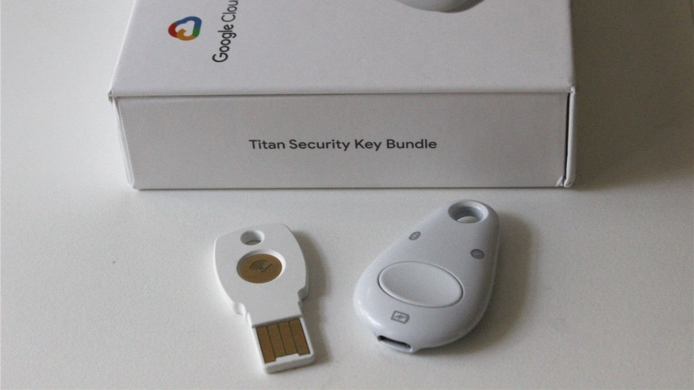
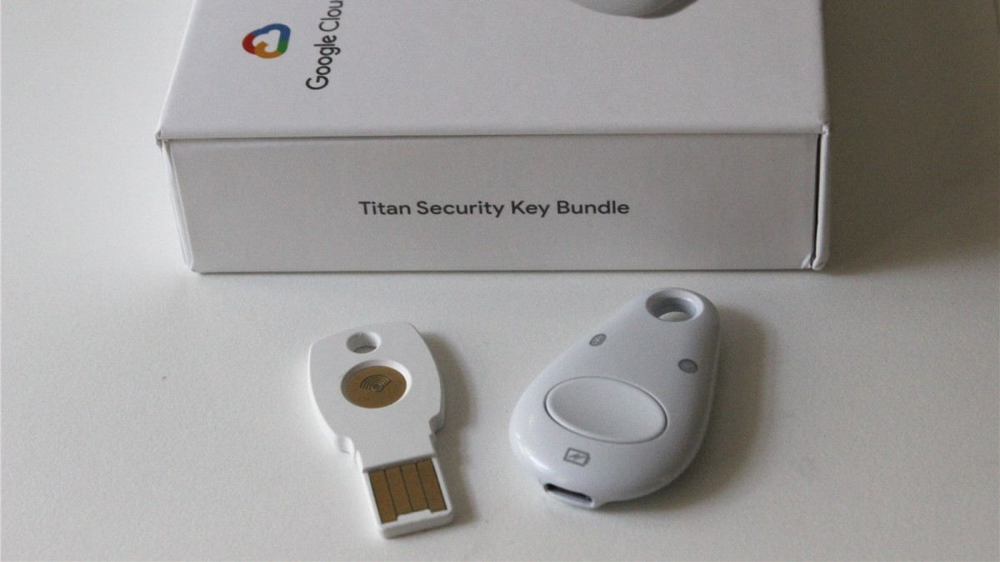
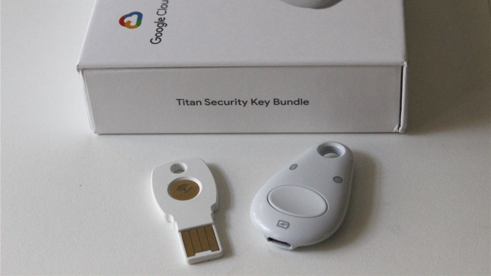
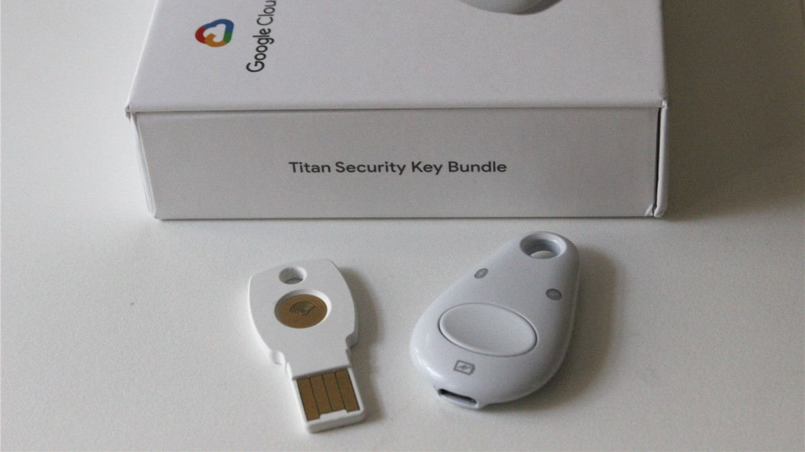

Using Data Analytics I will show that with 2 Factor Authentication (2FA), the company will be able to:

 




Totals: Desktop Computer 1029, Paper 587, Other Portable Electronic Device 314, Other 304, Network Server 270, E-mail 137, Electronic Medical Record 65
Notice that "Hacked" is the number one

| My Top Two Cyber Security 2FA Recomendations: | Titan Key--------- | Yubikey |
|---|---|---|
| Increases customer service speed: | ✓ | ✓ |
| Save money and free up IT Department time: | ✓ | ✓ |
| Pretects from online fishing attacks: | ✓ | ✓ |
| Cost effective: | ✓ | ✓ |
| Works with Google Chrome: | ✓ | |
| Works with Internet Explorer: | ✓ | |
| Made by Google: | ✓ |

Click here for my Github Account